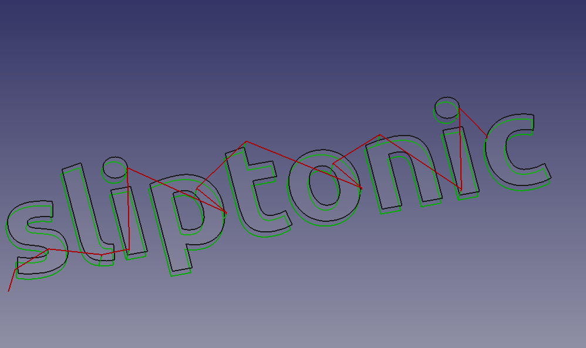

CAM Gravure en V
 CAM Gravure en V
CAM Gravure en V
- Menu location
-
- Workbenches
- Default shortcut
-
None
- Introduced in version
-
0.19
- See also
-
None
Description
La commande  Gravure en V est principalement destiné à la gravure de la ligne centrale d’une
Gravure en V est principalement destiné à la gravure de la ligne centrale d’une  Draft Forme à partir d’un texte sur une pièce. Cependant, cela peut être utile pour d’autres types de 2D.
Draft Forme à partir d’un texte sur une pièce. Cependant, cela peut être utile pour d’autres types de 2D.
Contrairement à la gravure qui suit les lignes d’une Forme à partir texte, la gravure en V utilise un couteau en forme de V et tente de dégager la zone en déplaçant le couteau au centre de la région et en variant la profondeur de coupe. Étant donné qu’un rayon de coupe en V varie avec la profondeur, la largeur de coupe varie également. Le résultat est une coupe plus naturelle, en particulier pour les polices serif.



L’algorithme V-carve calcule une trajectoire le long de la ligne centrale d’une région à l’aide d’un diagramme de Voronoï. Cette ligne centrale est le parcours que l’outil suivra dans le plan XY. Il calcule ensuite un « cercle inscrit maximal » suivant le parcours. Il s’agit du plus grand cercle qui peut être tracé à ce point et qui reste entièrement à l’intérieur de la zone de dégagement. La profondeur de coupe est calculée à l’aide du rayon du cercle et de l’angle de la pointe de l’outil.
introduced in 26.3 : le routage peut utiliser le retour en arrière sur les arêtes virtuelles. Si le prochain point de départ de la découpe est accessible via un parcours déjà tracé ou via une arête qui sera tracée ensuite, l’opération peut suivre cette arête au lieu d’effectuer un retrait, un déplacement rapide et une plongée.
Utilisation
Préparation des formes à graver
-
Les
 Draft Formes à partir d’un texte sont utilisables immédiatement.
Draft Formes à partir d’un texte sont utilisables immédiatement. -
Les fichiers SVG nécessitent un certain traitement, à la fois dans l’éditeur et dans l’
 atelier Draft :
atelier Draft :-
Dans l’éditeur (par exemple Inkscape) : assurez-vous que le fichier ne contient que des parcours et que les parcours sont dissociés. Assurez-vous qu’il n’y a pas de parcours auto-sécants, (dans Inkscape) utilisez Path → Simplify and union to join CAMs that overlap.
-
Basculez vers l’
atelier Draft depuis le sélecteur d’atelier -
Importez le SVG en utilisant
-
Le résultat devrait ressembler à ceci :
::

-
Ci-dessus : résultats de l’importation « SVG as geometry »
::
;;
Les trajectoires avec des trous (lettres, la vigne dans l’image ci-dessus) sont importés comme 2 parcours séparés (nommés le long des lignes de CAM905 et CAM905001 dans l’arborescence), l’un d’eux est le trou et l’autre est le contour. Nous traiterons de cela dans la prochaine étape
-
-
Pour obtenir les faces 2D, CAM Gravure en V a besoin de :
-
Pour les parcours sans trous :
-
Sélectionnez le parcours
-
Choisissez Modification
-
Suivi de Modification
-
-
Pour les parcours avec trous :
-
Sélectionnez le parcours extérieur puis le parcours intérieur
-
Choisissez Modification deux fois
:: Certains parcours se comportent différemment, vous devrez donc peut-être jouer avec
 Agréger et
Agréger et  Désagréger jusqu’à ce que vous obteniez quelque chose nommé :
Désagréger jusqu’à ce que vous obteniez quelque chose nommé : Face<number>
Le résultat final devrait ressembler à ceci :

-
-
-
Création de l’opération Gravure en V
-
Passer à l’
 atelier CAM depuis le sélecteur d’atelier
atelier CAM depuis le sélecteur d’atelier -
Ajouter une tâche, utilisez les objets nommés
Face<number>(ou la Forme à partir d’un texte) comme base, ajouter contrôleur d’objets coupants en V, définir les avances, les vitesses, etc. -
L’opération ne prend en charge qu’un seul objet (soit un seul objet Face, soit une Forme à partir d’un texte), donc pour chaque objet :
-
Sélectionner du menu supérieur. Cela ouvre le panneau de configuration.
-
Ouvrir l’onglet Géométrie de base et ajouter toutes les faces de la Forme à partir d’un texte, ou la face d’un seul objet Face obtenu ci-dessus.
-
Cliquer sur Appliquer et inspecter le parcours généré; si nécessaire, ajuster les paramètres d’opération (le seuil peut être réglé plus haut dans la plupart des situations).
-
Appuyez sur OK pour terminer.
-
Propriétés
Données
-
Placement : -
-
Label : -
-
ClearanceHeight : -
-
FinalDepth : -
-
SafeHeight : -
-
StartDepth : -
-
StepDown : -
-
OpFinalDepth : -
-
OpStartDepth : -
-
OpStockZMax : -
-
OpStockZMin : -
-
OpToolDiameter : -
-
Active : -
-
Comment : -
-
CoolantMode : -
-
StartVertex : -
-
ToolController : -
-
UserLabel : -